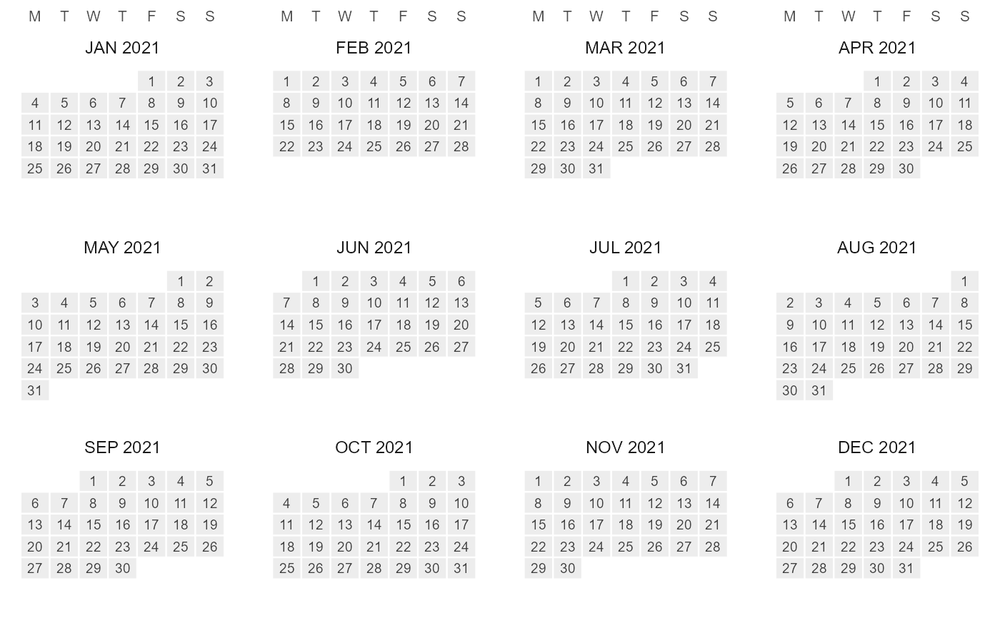

One function for every calendar figure, selected by type: the structure
icicle (default), the axonometric stack, a heatmap of data on a timeframe
grid, and a wall calendar. autoplot() on a Calendar returns the same
ggplot; plot() draws it and returns it invisibly.
Usage
gg_calendar(
object,
type = c("icicle", "stack", "heatmap", "wall"),
data = NULL,
z = NULL,
key = NULL,
year = NULL,
rule = "weighted_mean",
by = "hour",
fun = mean,
palette = NULL,
labels = NULL,
reference = NULL,
annual = TRUE,
fill = c("order", "share", "weight"),
color_pattern = c("within", "global"),
max_labels = 60L,
max_segments = 2000L,
border = NA,
view = NULL,
angle = NULL,
ratio = NULL,
shear = 0.5,
depth = 0.3,
gap = NULL,
rotate = 0,
direction = c("up", "down"),
colour = "grey35",
linewidth = 0.2,
frame = NULL,
frame_fill = NA,
connectors = FALSE,
x_tf = NULL,
y_tf = NULL,
facet_tf = NULL,
arrange = c("weekday", "sequence"),
week_start = "MON",
...
)
# S3 method for class 'Calendar'
autoplot(object, ...)
# S3 method for class 'Calendar'
plot(x, ...)Arguments
- object
A
Calendar.- type
The figure:
"icicle"(default),"stack","heatmap"or"wall"; see the sections below. An argument that belongs to another type is an error, not ignored.- data, z
Colour the figure by a value instead of by structure.
datais a data.frame keyed by timeslice (seekey) with the value column named byz;zis required wheneverdatais given. The icicle and the stack recast the value to every timeframe shown, so the whole figure shares one continuous fill scale; the heatmap and the wall collapse the leaves into the cells shown withfun. Legend title vialabs(fill = ).- key
Key column of
data.NULL(default) usestimeslicewhen present; the wall also accepts a POSIXct/Date column and detects the first one.- year
The calendar year the figure is about: the wall arranges its days by that year's weekdays, the icicle and the stack route their recasts through it (required with
data, seerecast_calendar()).- rule, fun
Aggregation.
ruleis the registry rule of the per-timeframe recasts on the icicle and the stack ("sum","mean","weighted_mean", ... as inrecast_calendar(); explicit or registered, never guessed)."share"colours every row by each timeslice's share within the row above it on a fixed linear 0..1 scale;"logshare"is the same on a fixed log10 percent scale.funis the function that collapses several observations into one cell on the heatmap and the wall (defaultmean).- by
With
dataon the icicle or the stack: base-grid granularity of the recasts. Defaults to"hour", which is always correct (the automatic choice can pick a daily grid for sub-daily calendars, which silently collapses hour-type slices).- palette
Fill scale.
NULL(default) is the type's own: viridis"D"on the icicle and the stack, ggplot2's default gradient on the heatmap and the wall. A viridis option letter or name ("C","plasma","turbo", ...) opts into that palette on any type.NAadds no fill scale at all, so a custom one can be supplied.- labels
What is labelled.
NULL(default) is the type's own. Icicle:"name"(the member value, e.g.h00; the default),"timeslice"(the full path, e.g.Q1_h00) or"none";TRUEandFALSEare shorthands. Stack: a character vector of timeframes whose member names are drawn on their plane (TRUE= all; default none). Wall:TRUE(default) draws the day numbers. The heatmap has no labels.- reference
Icicle only: a complete
Calendarto draw a sampledobjectagainst. The layout is the reference's; segments without a timeslice ofobjectare left empty (grey).TRUEresolves the reference frommeta$parent_name, as recorded byfilter_calendar().- annual
Icicle and stack: include the
ANNUALroot. DefaultTRUE.- fill
Icicle: what drives the structure fill,
"order"(chronological position, default),"share"or"weight".dataoverrides it.- color_pattern
Icicle, for
fill = "order":"within"(default) restarts the gradient inside each parent timeslice (hours recycle every day);"global"sweeps once across the whole year.- max_labels
Icicle: rows with more segments than this get no labels. Default 60.
- max_segments
Icicle: rows with more segments than this are binned by x-midpoint before drawing (fill = width-weighted mean), keeping hourly calendars fast. Default 2000.
- border
Icicle: rectangle border colour. Default
NA(none), so dense rows render as smooth gradients.- view
Stack: a predefined point of view –
"oblique"(the shear/depth default),"top-down","cavalier","cabinet","military","isometric","dimetric","trimetric","perspective"(receding planes shrink) or"pyramid"(receding planes grow: the coarsest timeframe is the small top, the finest the wide base).- angle, ratio
Stack: oblique view by angle (degrees of the receding axis) and foreshortening ratio –
e2 = ratio * (cos(angle), sin(angle)). Overridden byview.- shear, depth, gap
Stack: the raw receding-axis components (
e2 = (shear, depth); used when neitherviewnorangle/ratiois given) and the vertical spacing between planes: one value for every pair, or one per pair from the top down.gap = NULL(default) spaces planes almost touching, with a slight overlap (0.85 x the plane's screen height). Under"perspective"and"pyramid"each spacing is scaled with the planes it separates, so it stays uniform relative to their size.- rotate
Stack: in-plane rotation of each plane (degrees, counter-clockwise) before projection.
- direction
Stack:
"up"(default) stacks the coarsest timeframe on top;"down"puts it at the bottom.- colour, linewidth
Stack: segment border colour and width, recycled across the planes (one entry per plane styles them individually). Defaults
"grey35"and0.2, ggplot2's own sf polygon border. The icicle's rectangle border is the separateborderargument.- frame
Stack: draw each plane's outline (the unit box run through the same projection) as a guide.
TRUEuses"grey80", a colour string uses that colour,NULL(default) draws no frames.- frame_fill
Stack: fill for the plane sheets; best mostly transparent, e.g.
frame_fill = ggplot2::alpha("grey60", 0.12). Setting a fill draws the frames even withoutframe;NA(default) = no fill.- connectors
Stack: dashed lines joining the corresponding frame corners of adjacent planes.
TRUEuses the frame colour, a colour string picks its own; defaultFALSE.- x_tf, y_tf, facet_tf
Heatmap: timeframe names overriding the automatic layout (finest timeframe on y, next-finest on x, anything coarser as facets).
- arrange
Wall:
"weekday"(default) places each day under its weekday ofyear;"sequence"fills the week grid in order.- week_start
Wall: first day of the week. Default
"MON".- ...
Fixed aesthetics for the figure's main layer: the icicle's
geom_rect(), the stack's plane polygons, the heatmap's and the wall'sgeom_tile()(e.g.alpha = 0.8).- x
Icicle (type = "icicle")
One horizontal band per timeframe (ANNUAL root on top, coarsest
first), rectangle widths proportional to timeslice shares, x spanning
the covered year on [0, 1]. With data, each band's rectangles carry
the value recast to that band's timeframe; dense bands are binned with
width-weighted means.
Stack (type = "stack")
The same structure drawn axonometrically: one sheared plane per
timeframe, ANNUAL on top, each plane segmented by the true duration
shares, with segments visibly nesting into the plane above. Without
data, each plane is coloured by its own segment order.
Heatmap (type = "heatmap")
Data on a timeframe grid: finest timeframe on y, next-finest on x,
anything coarser as facets (overridable via x_tf/y_tf/facet_tf).
Without data, the calendar's own share is drawn.
Wall (type = "wall")
A wall calendar: one facet per month (in member order, so April first
for the fy04_* fiscal calendars), day cells in a week grid, weeks
top-down. data may be keyed by timeslice (day-level ids directly;
finer ids, e.g. hours of d365_h24, roll up into their day cell) or by
datetime (mapped through datetime_to_timeslice() on the day layer).
Needs a day-resolution timeframe (YDAY or MDAY).
Methods
autoplot(object, ...) is gg_calendar(object, ...). plot(x, ...)
prints that figure and returns it invisibly, like base plot().
Examples
if (requireNamespace("ggplot2", quietly = TRUE)) {
cal <- calendar("q4_h24")
gg_calendar(cal)
ggplot2::autoplot(cal) # the same figure
gg_calendar(calendar("s4_hp3"), type = "stack")
x <- data.frame(timeslice = sprintf("m%02d", 1:12), load = 1:12)
gg_calendar(calendar("m12"), data = x, z = "load", type = "heatmap")
gg_calendar(calendar("m12_md365"), type = "wall", year = 2021)
}
